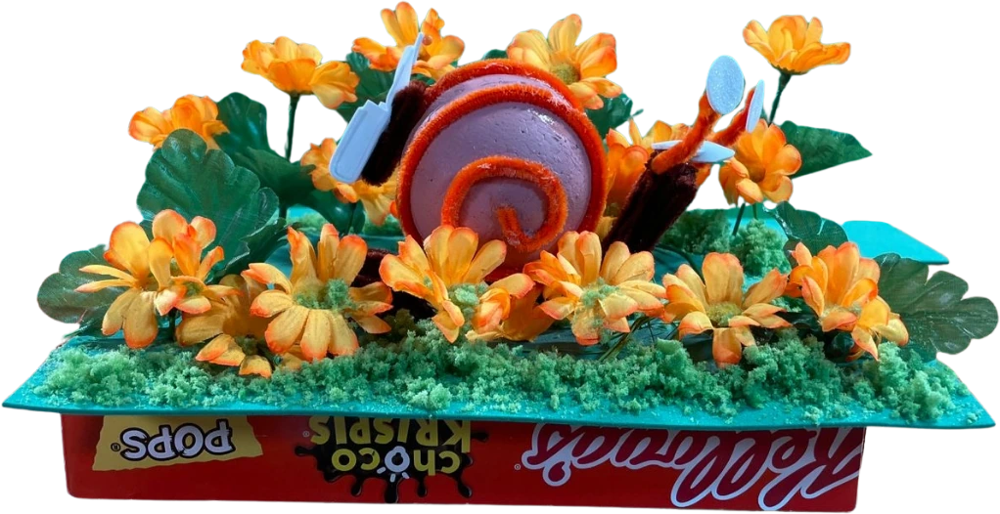
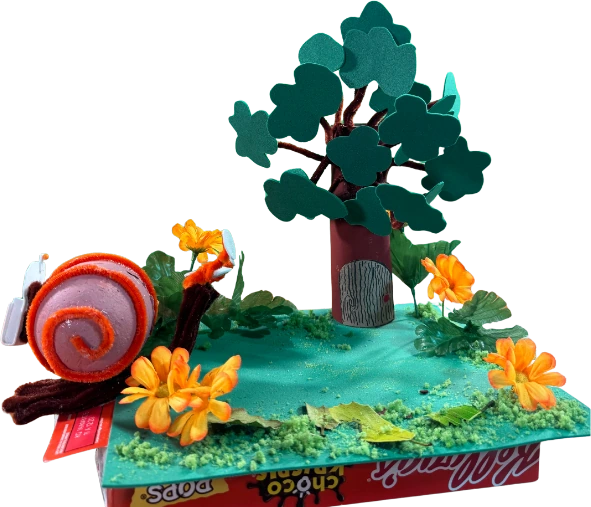

L'histoire d'un escargot facteur, certain de livrer son courrier sans encombre — avant de réaliser que le chemin sera long.


Court métrage réalisé collectivement à trois. Chaque étape a été répartie entre nous, chacune et chacun contribuant à toutes les parties du film.